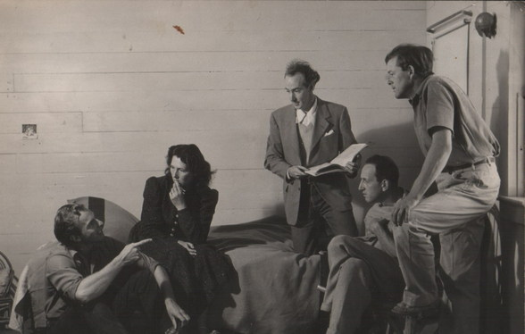
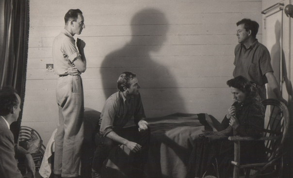
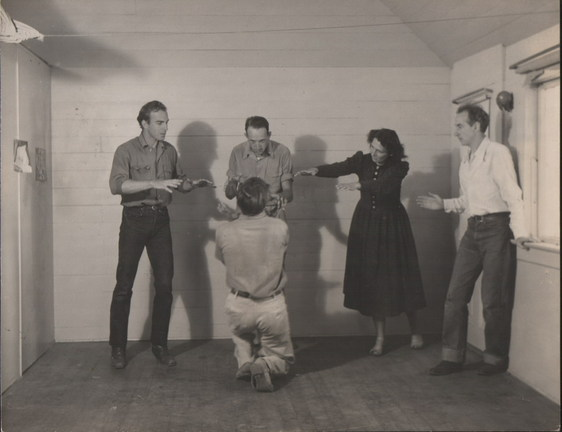
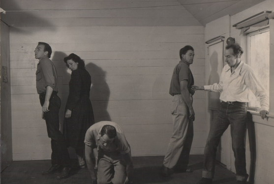
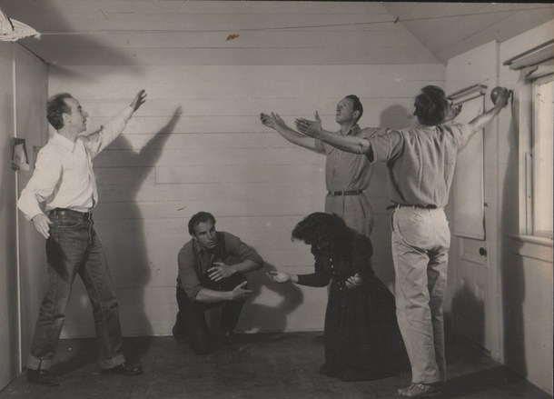

Ojai, California
In 1947 Alan Harkness and colleagues formed the High Valley Theatre Workshop in the Ojai valley in California. The valley was a haven for artists, writers, musicians and those in search of spiritual refuge in a time of chaos. Krishnamurti lived there for many years, founding a high school with Aldous Huxley and others.
The aim of The High Valley Theatre is to be a workshop wherre actors may be fully trained, and a theatre where significant plays, old and new, may be prepared and sent on tour, with the actors receiving this necessary experience before audiences. The training ground is to be a home to which the actors may return and further develop and deepen the work.
The method of training is based on the approach of the Chekhov Theatre Studio, whereby a thorough training of voice and body for dramatic expression, as well as the actor’s own inner creativeness is developed.
Some Important Aspects of the Training:
- Imagination of a role, inner and outer characteristics and their incorporation.
- Approach to technique through psychological gesture, objective and justification.
- The five Greek Gymnastics which form a basis for many aspects of dramatic expression.
- Deepening the experience of speech through studies based on Rudolf Steiner’s method of Speech Formation and Eurythmy.
- Fencing.
- Dancing.
- The application of all points of approach to dramatic sketches and improvisations, where problems of atmosphere, ensemble, rhythm, dramatic form and style are exercised.
Lectures will be given on theatre history, evolution of the drama and past and present trends.
Performances: A large part of the training will consist of public appearances in plays which have been prepared in the workshop. This will provide opportunity for practical experience in makeup, and in the preparation of costumes, scenery and lighting for the stage.
Notes about the aim in our Performances
To transform the everyday body so that it may move as the expression of soul and spirit. To transform the everyday speech so that the sounds and rhythms of poetry become vocal and inevitable.
A word has its gesture.
A movement has its sound.
A true drama has its form which is gesture — movement sound — word.
There are studies which lead to these inner dynamics. When achieved in a performance they make a strong impression on an audience, even if it does not understand the actual language of the speech. The deeper levels of the human being are touched, not only of the head — understanding and sentiment. With such means one can more faithfully reveal the human tragi-comedy; awaken the emotions of the audience and in the Aristotelian sense bring harmony into these emotions.
We believe that the sustenance given to the audience psyche by such a performance is of especial value in our age when so much coarsens and deadens it.
Various techniques are being worked at to create this expressive rhythmical theatre and the response of audiences in Italy, Germany, Switzerland and Paris are encouraging — school children are particularly enthusiastic; but above all our aims are to move to tears and laughter; to invoke by the magic of theatre the unsuspected angels and even demons; and by the sympathetic participation of the audience to bring about a transformation of human nature. If only one could achieve it and if one dared say it: — the theatre as an act of redemption. This it certainly was at its greatest and can become so again today.
Notes for an article on The High Valley Theatre production of Uncle Vanya
As it is with any work of art, different people have different interpretations of the play, Uncle Vanya. It is in interesting for those of us actively at work on a production of the play, here in Ojai, to read the New York critics on the current Old Vic presentation of the piece, and to note the local response here to the play. Stark Young, one of the few cultured and perceptive drama critics writing in New York, defends the play but criticises the lack of complete faith and mutual response in the acting of the English company. Of course reality and ensemble playing were especially developed by the Moscow Art Theatre where the Chekhov plays were first produced, and the plays are unthinkable without this weaving life. In reply to the criticism of ‘gloom’ he write: “Uncle Vanya is not gloomy; nothing so intense and inwardly alive could be dismissed as gloomy. It would also be called by Chekhov with his sensitive, observant, doctor’s mind, a comedy.”
Our presentation of the play must seem justified and stand or fall according to its ability to move and enthral an audience, and convey the special revelation of art. However a few words as to our view of the play, and our aims in producing it may be of interest.
To begin with, we feel privileged to work on Uncle Vanya in order to exercise out theatre craft. The plays of Chekhov with their psychological naturalism, the weaving of atmospheres and the subtly drawn characters demand a truthful and fine means of expression. Also, The High Valley Theatre has a small nucleus of actors who wish to work hard in an endeavour to create performances of excellence. From this group, Uncle Vanya could be well cast.
All the Chekhov plays show us that dark period 1890–1904; the fin-de-siecle, in middle class Russian life. Happily, that epoch is over, but in all parts of the world people are still living through the frustrations, hopes and boredoms of the Vanya characters. Very few have progressed beyond this. Outer technics have diverted the attention from within to gadgets and jittery mechanical amusements so that the soul is stunned; but those sensitive and courageous enough to look within will see with a certain humour and horror what Chekhov reveals. And here is one of the educational values in presenting the play: the objectifying of the feeling soul life. How few languid beauties are willing to look within, as does Yelena, and admit: “But as for me — I am a tiresome, futile person… In music and in my husband’s house and in all love affairs… When I come to think of it Sonya, I am very, very unhappy! There is no happiness for me in this world! None!”
But Chekhov is not all dejection. The Russian has abundant, vivid life and humour, and, although he has great difficulty in establishing any human balance between excesses of exaltation and despair, he has a religious belief in a future transformed humanity. Tolstoy, Dostoyevsky, Chekhov and Gorki all give expression to this. I do not believe this is a wishful thinking born out of dreadful social conditions, but a deep presentiment of a future development which may stem from this difficult but wonderful people. In Uncle Vanya this belief is shown through the country doctor, Astrov, who is aware of this meanness of the contemporary life and of his own deadening feelings, and yet plants forests for a future race. Regarded as a crank by his contemporaries for his ideals and his refusal to eat meat, he is surely a portrayal of the country doctor Anton Chekhov himself. The last act is a remarkable texture of evening atmosphere and frustrated lives, with the bells of departing carriages jingling out into the night, carrying away the loved ones. But the play ends with a striking scene of belief in the future. Out of a broken heart, Sonya speaks to the sad Vanya words that glow with belief, while ‘Waffles’ strums a guitar.
Two catastrophic wars have shaken the world since Anton Chekhov wrote. People at all awake to the times are facing deeper abysses and seeking further illumination than the diagnosis and artistry of the doctor-writer could reveal. But as social history, Uncle Vanya shows us a dark epoch that is over and that had no answer or solution for the suffering humanity which Chekhov lays bare with acute sharpness and tender humour. As theatre, the play awakens fear and compassion and in the Aristotelian sense leads to a catharsis, also revealing that which art alone can reveal.
High Valley Theatre — in rehearsal

High Valley Theatre in Rehearsal 
High Valley Theatre in Rehearsal 
High Valley Theatre in Rehearsal 
High Valley Theatre in Rehearsal 
High Valley Theatre in Rehearsal